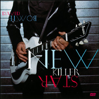
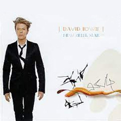
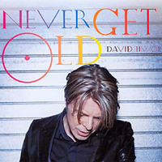

Rex Ray had been working with Bowie since the mid-90s, when he began designing posters for the US leg of the Outside Tour. Asked if he knew any illustrators who could come up with a Japanese anime-style illustration for Reality, he proposed that he draw the artwork himself. "While keeping the anime style in mind, I also used the paintings of Margaret Keane as a reference and worked endlessly developing a face and hairstyle for the figure," Ray recalled. Where did it stand among other David Bowie album covers? The results divided fans, but Bowie had always sought "a fakeness to the cover that undermines" the concept of reality. "It's the old chestnut," he added: "What is real and what isn't? It's actually about who's stolen this world."
Illustrator: Rex Ray | Designer: Jonathan Barnbrook
NEW KILLER STAR See the great white scar Over Battery Park Then a flare glides over But I won't look at that scar Oh, my nuclear baby (We'll discover a star) Oh, my idiot trance All my idiot questions (Like the stars in your eyes) Let's face the music and dance Don't ever say I'm ready, I'm ready, I'm ready I'll never say I'm better, I'm better, I'm better Don't ever say I'm ready, I'm ready, I'm ready I'll never said I'm better, I'm better, I'm better, I'm better than you All the corners of the buildings Who but we remember these? The sidewalks and trees I'm thinking now I got a better way I discovered a star I got a better way Ready, set, go I got a better way A new killer star I got a better way Ready, set, go I got a better way The stars in your eyes I got a better way Ready, set, go I got a better way I discovered a star I got a better way Ready, set, go See my life in a comic Like the way they did the Bible With the bubbles and action The little details in colour First a horseback bomber (We'll discover a star) Just a small thin chance Like seeing Jesus on Dateline (Like the stars in your eyes) Let's face the music and dance Don't ever say I'm ready, I'm ready, I'm ready I'll never said I'm better, I'm better, I'm better Don't ever say I'm ready, I'm ready, I'm ready I'll never said I'm better, I'm better, I'm better, I'm better than you All the corners of the buildings Who but we remember these? The sidewalks and trees I'm thinking now I got a better way I discovered a star I got a better way Ready, set, go I got a better way A new killer star I got a better way Ready, set, go I got a better way The stars in your eyes I got a better way Ready, set, go PABLO PICASSO Swinging on the back porch Jumping off a big log Pablo's feeling better now Hanging by his finger nails Swinging on the back porch Jumping off a big log Pablo's feeling better now Hanging by his finger nails Well some people try to pick up girls They get called assholes This never happened to Pablo Picasso The girls would turn the colour of a juicy avocado When he would drive down their street in his El Dorado He could walk down your street Girls could not resist his stare So Pablo Picasso was never called an asshole Not like you Wow! Swinging on the back porch Jumping off a big log Pablo's feeling better now Hanging by his finger nails Swinging on the back porch Jumping off a big log Pablo's feeling better now Hanging by his finger nails He could walk down your street And girls could not resist his stare Pablo Picasso never got called an asshole Well the girls would turn the colour of a juicy avocado When he would drive down their street in his El Dorado Well he was only 5'3" But girls could not resist his stare Pablo Picasso never got called an asshole Not in New York Wow! Swinging on the back porch Jumping off a big log Pablo's feeling better now Hanging by his finger nails Swinging on the back porch Jumping off a big log Pablo's feeling better now Hanging by his finger nails NEVER GET OLD Better take care Think I better go, better get a room Better take care of me Again and again I think about this and I think about personal history Better take care I breathe so deep when the movie gets real When the star turns round Again and again He looks me in the eye says he's got his mind on a countdown 3-2-1 Forever I'm screaming that I'm gonna be living on till the end of time Forever The sky splits open to a dull red skull My head hangs low 'cause it's all over now And there's never gonna be enough money And there's never gonna be enough drugs And I'm never ever gonna get old There's never gonna be enough bullets There's never gonna be enough sex And I'm never ever gonna get old So I'm never ever gonna get high And I'm never ever gonna get low And I'm never ever gonna get old Better take care The moon flows on to the edges of the world because of you Again and again And I'm awake in an age of light living it because of you Better take care I'm looking at the future solid as a rock because of you Again and again Wanna be here and I wanna be there Living just like you, living just like me Forever Putting on my gloves and bury my bones in the marshland Forever Think about my soul but I don't need a thing Just the ring of the bell in the pure clean air And I'm running down the street of life And I'm never gonna let you die And I'm never ever gonna get old And I'm never ever gonna get I'm never ever gonna get I'm never ever gonna get old And I'm never ever gonna get I'm never ever gonna get And I'm never ever gonna get old I'm never ever gonna get Never ever get old THE LONELIEST GUY Streets damp and warm Empty smell metal Weeds between buildings Pictures on my hard drive But I'm the luckiest guy Not the loneliest guy Steam under floor Shards by the mirror's frame Clouds green and low No sign, no nothing now But I'm the luckiest guy Not the loneliest guy All the pages that have turned All the errors left unlearned, oh Well I'm the luckiest guy Not the loneliest guy In the world Not me Not me LOOKING FOR WATER Silver leaves are spinning round Take my hand as we go down and down and down Looking for water But I lost God in a New York minute Don't know about you but my heart's not in it (Looking looking looking) I'm looking for water I'm looking for water (Looking looking looking) I can't breathe the air Can't raise the fight Because all we've got left is a beat in the night And I'm Looking for water Looking for water Looking for water Looking looking Take my hand as we go down and down Leave it all behind nothing will be found I'm looking for water I'm looking for water Looking for water (Looking looking) I'm looking for water Looking everywhere Looking for water Looking here and there I'm looking for water I'm looking for water Looking for water (Looking looking) I can't live in this cage I can't eat this candy To the ends of the Earth To this pain in my head The look in your eyes That never means never The dawns early light Baby dumb is forever (Looking looking) (Looking looking) Looking for water (Looking looking) I'm looking for water Looking for water SHE'LL DRIVE THE BIG CAR She waited by the moon She was sick with fear and cold She felt too old for all of this Of course she never showed She lugged her suitcase to the bus Melted home through the snow North along Riverside She slips beneath the sheets A husband's quiet devoted wife But strangers, sad and nervous By the dawn's early light Love lies like a dead cloud On a shabby, yellow lawn Up on Riverside She'll drive the big car He'll sit behind She'll keep an eye on Jessica South along the Hudson She'll turn the radio high Find a station playing sad, sad soul Just a little bit louder now (Just a little bit louder now) South along the Hudson yeah (I'll bring you there) Just a little bit faster now (Just a little bit faster now) Just a little bit louder now (Just a little bit louder now I'll bring you there) Just a little bit angry now (Just a little bit angry now) South along the Hudson, yeah (I'll bring you there) And she'll drive the big car And talk herself insane (I'll bring you there) Just a little bit louder now (Just a little bit louder now) Just a little bit angry now (I'll bring you there) Way back when millennium Meant racing to the light He promised her a dream-life He'd take her back to street-life Away from violent water With its cormorants and leaves Up on Riverside She'll drive the big car But he'll sit behind Bursting her bubbles of Ludlow and Grand South along the Hudson She'll turn the radio way up high Find a station playing sad, sad soul Just a little bit louder now (Just a little bit louder now) South along the Hudson (I'll bring you there) Just a little bit faster now (Just a little bit faster now) Just a little bit louder now (Just a little bit louder now I'll bring you there) Just a little bit angry now (Just a little bit angry now) South along the Hudson (I'll bring you there) Just a little bit faster now (Just a little bit faster now) Just a little bit louder now (Just a little bit louder now I'll bring you there) Just a little bit angry now (Just a little bit angry now) South along the Hudson, yeah (I'll bring you there) She'll drive the big car He'll sit behind (I'll bring you there) She'll keep an eye on Jessica Just a little bit faster now (I'll bring you there) Just a little bit faster now DAYS Hold me tight Keep me cool Going mad Don't know what to do Do I need a friend? Well, I need one now All the days of my life All the days of my life All the days I owe you All I've done I've done for me All you gave You gave for free I gave nothing in return And there's little left of me All the days of my life All the days of my life All the days I owe you In red-eyed pain I'm knocking on your door again My crazy brain in tangles Pleading for your gentle voice Those storms keep pounding through my head and heart I pray you'll soothe my sorry soul All the days of my life (All the days of my life) All the days of my life (All the days of my life) All the days I owe you All the days of my life (All the days of my life) All the days of my life (All the days of my life) All the days I owe you All the days of my life (All the days of my life) All the days of my life (All the days of my life) All the days I owe you FALL DOG BOMBS THE MOON Hope little girl Come blow me away I don't care much I win anyway Just a dog I'm goddamn rich An exploding man When I talk in the night There's oil on my hands What a dog Fall dog is cruel and smart Smart time breaks the heart Fall dog bombs the moon Devil in a market place Devil in your bleeding face Fall dog bombs the moon What a dog There's always a moron Someone to hate A corporate tie A wig and a date Just a dog These blackest of years That have no sound No shape, no depth No underground What a dog Fall dog is cruel and smart Smart time breaks the heart Fall dog bombs the moon A devil in a market place A devil in your bleeding face Fall dog bombs the moon What a dog TRY SOME, BUY SOME Way back in time Someone said try some I tried some Now buy some, I bought some Oh oh oh After a while When I had tried them, denied them I opened my eyes and I saw you Not a thing did I have Not a thing did I see 'Til I called on your love And your love came to me Oh oh oh oh oh Oh oh oh oh oh Oh oh oh oh Through my life I've seen grey sky, met big fry Seen them die to get high Oh And when it seemed that I would only be lonely I opened my eyes and I saw you Not a thing did I feel Not a thing did I know 'Til I called on your love And your love sure did grow Oh oh oh oh oh Oh oh oh oh oh Oh oh oh oh Won't you try some Baby won't you buy some Won't you try some Baby won't you buy some Oh oh oh oh oh Oh oh oh oh oh Oh oh oh oh REALITY Tragic youth was looking young and sexy The tragic youth was wearing tattered black jeans Bearing arms and flaunting all her mischief The tragic youth was going down on me And I swear Woo hoo Yes I swear I built a wall of sound to separate us And hid among the junk of wretched highs I sped from Planet X to Planet Alpha Struggling for reality Ha ha ha ha Woo hoo Ha ha ha ha Whoo hoo Hey, now my sight is failing in this twilight Da da da da da da da da da Now my death is more than just a sad song Da da da da da da da da da And I swear Woo hoo Yes I swear Woo hoo I still don't remember how this happened I still don't get the wherefores and the whys I look for sense but I get next to nothing Hey boy welcome to reality Ha ha ha ha Woo hoo I've been right and I've been wrong Now I'm back where I started from Never looked over reality's shoulder Ha ha ha ha Huh ha ha ha Woo hoo Huh ha ha Wooh Woo hoo Wooh BRING ME THE DISCO KING You promised me the ending would be clear You'd let me know when the time was now Don't let me know when you're opening the door Stab me in the dark, let me disappear Memories that flutter like bats out of hell Stab you from the city spires Life wasn't worth the balance Or the crumpled paper it was written on Don't let me know we're invisible Don't let me know we're invisible Hot cash days that you trailed around Cold cold nights under chrome and glass Led me down a river of perfumed limbs Sent me to the streets with the good time girls Don't let me know we're invisible Don't let me know we're invisible We could dance, dance, dance through the fire Dance, dance, dance through the fire Feed me no lies I don't know about you, I don't know about you Breathe through the years I don't know about you, I don't know about you Bring me the disco king I don't know about you, I don't know about you Dead or alive, bring me the disco king Bring me the disco king, bring me the disco king Bring me the disco king Spin-offs with those who slept like corpses Damp morning rays in the stiff bad clubs Killing time in the '70s Smelling of love through the moist winds Don't let me know when you're opening the door Close me in the dark, let me disappear Soon there'll be nothing left of me Nothing left to release Dance, dance, dance through the fire Dance, dance, dance through the fire Feed me no lies I don't know about you, I don't know about you Breathe through the years I don't know about you, I don't know about you Bring me the disco king I don't know about you, I don't know about you Dead or alive, bring me the disco king Bring me the disco king Bring me the disco king, bring me the disco king Bring me the disco king, bring me the disco king Bring me the disco king, bring me the disco king FLY The television's on and I'm walking through the yard The house is fast asleep and I'm crying in my car Dying for the weekend The kids are alright but they don't smile much They sit up in their garage with their decks and their stuff Dying for the weekend The boy's on a charge but his mother doesn't know I never got around yet to telling her so It would only make her crazy And I'll be fine I'm only sleeping in my head And I can fly I close my eyes and I can fly The television's on and I'm walking through the yard The house is fast asleep and I'm crying in my car Dying for the weekend The kids have got a gig in an all night rave They're looking pretty tough but I still want to say Do you really have to go? Down in the back street a skinny kid cries Bad drive Saturday another life flies Dying for the weekend And I'll be fine I'm only sleeping in my head And I can fly I close my eyes and I can fly And I can fly And fall toward the end And I can fly And I'll be fine I'm only sleeping in my head And I can fly I close my eyes and I can fly
SINGLES


